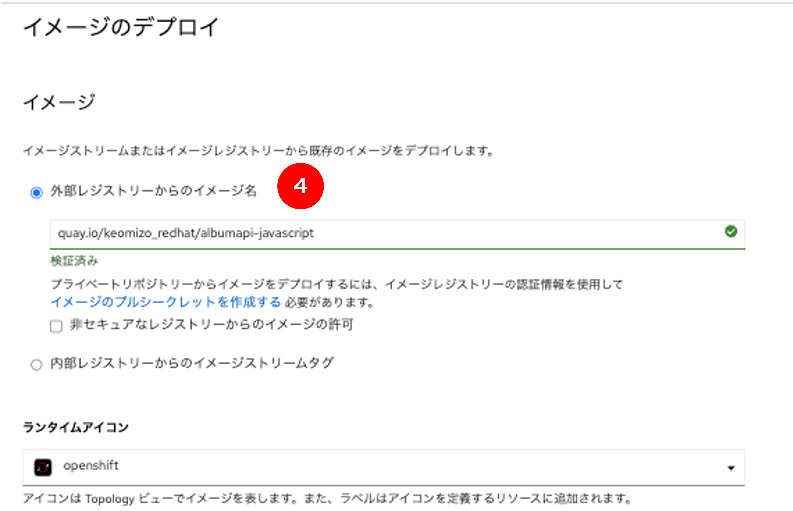
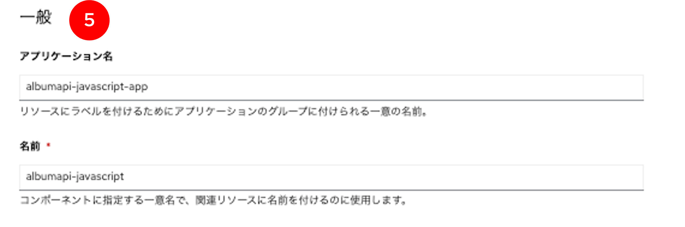
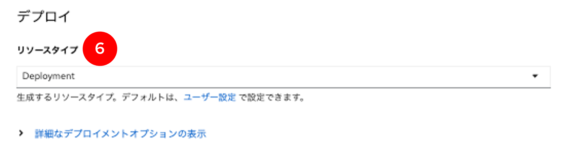
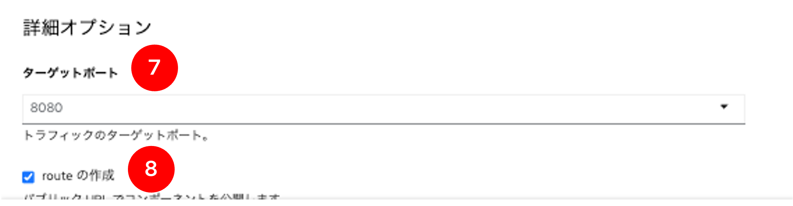
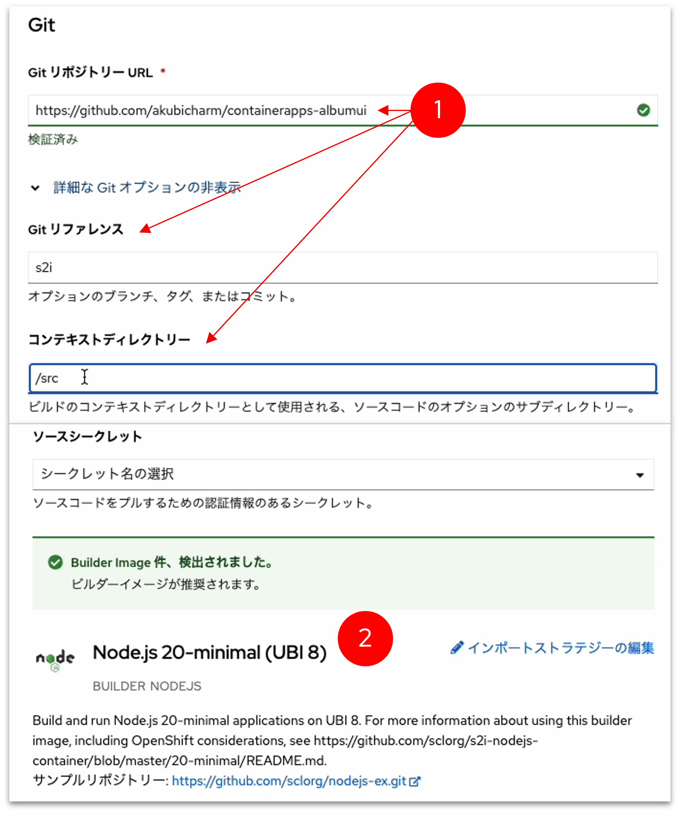
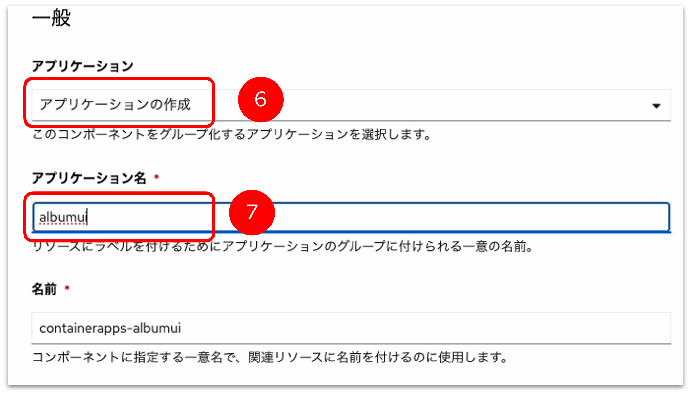
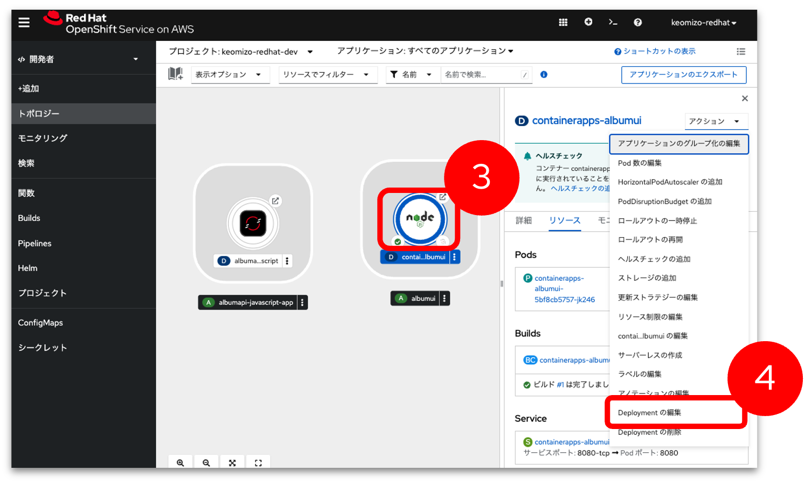
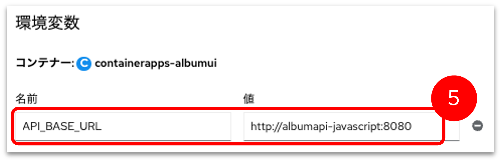

OpenShift Sandbox にアプリケーションをデプロイ
ゴール
フロントアプリ(album-ui)とバックエンドアプリ(album-api)の2つのアプリケーションをデプロイし、フロントアプリからバックエンドアプリに連携できるように設定していきます。
このハンズオンでは、コンテナイメージおよびGitリポジトリに保存されたソースコードを元にOpenShiftにアプリケーションをデプロイしていきます。 OpenShiftのs2iビルドとデプロイの機能を利用するので、YAMLファイルを作成することなく、OpenShiftにアプリケーションをデプロイできることを体験します。
準備
Red Hat Developerのサイトで、Red Hat Acountが登録してください。
Red Hat Developerのアカウント名を画面上部のテキストフィールドに入力してください。ワークショップのコンテンツにRed Hat Developerのアカウント名が反映されます。

Step1: サンドボックスの開始
-
https://developers.redhat.com/developer-sandbox にアクセスして「Start your sandbox for free」をクリック
-
「Log in to your Red Hat account」の画面で、Red Hatアカウントでログイン
-
Red Hat Hybrid Cloud Console画面で、Red Had OpenShiftの「Launch」ボタンをクリック
-
Log in with … の画面で「DevSandbox」をクリック。OpenShiftのポータル画面が表示される
-
自分の「%USERID%-dev」というネームスペースにアクセス
管理者ビューでは「%USERID%-dev」と「openshift-virtualization-os-images」いうネームスペースが表示されます。開発者ビューでは「%USERID%-dev」だけが表示されます。 sandbox環境では、新しいネームスペースを作成することはできません。
Step2. Album API アプリケーションのデプロイ
このステップではコンテナイメージを指定して、バックエンドのアプリケーションをデプロイします。
-
左Paneのプルダウンメニューで「開発者」を選択
-
左Paneの「＋追加」をクリック
-
右Paneをスクロールして「コンテナイメージ」をクリック

-
イメージセクションの「外部レジストリーからのイメージ名」を選択し、イメージのURL「quay.io/keomizo_redhat/albumapi-javascript」を入力
※URLのチェックが終わると「検証済み」となる
 -
一般セクションはデフォルトのまま
 -
デプロイセクションのリソースタイプのプルダウンメニューで「Deployment」を選択
 -
詳細オプションセクションのターゲットポートが「8080」となっていることを確認
-
「routeの作成」のチェックボックスをチェック
フロントエンドアプリケーションからしか呼ばれない想定なので外部からアクセスするためのrouteの作成は本来不要ですが、ここでは動作確認のため外部からアクセスするためのrouteを作成します。
-
画面下部の「作成」ボタンをクリック

-
トポロジービューでアプケーションがデプロイされていることを確認（青線ならばOK）
Step3. REST API呼び出しの確認
-
トポロジー表示画面の右PaneでURLを開くボタンをクリック
-
ブラウザにJSONの文字列が表示されることを確認
{"message":"Call the /albums route to retrieve a list of albums"} -
ブラウザのURLの後ろに /albums を追記して、アルバム一覧のJSONメッセージが返ってくることを確認
[ { "id": 1, "title": "You, Me and an App ID", "artist": "Daprize", "price": 56.99, "image_url": "https://aka.ms/albums-daprlogo" }, { "id": 2, "title": "Seven Revision Army", "artist": "The Blue-Green Stripes", "price": 17.99, "image_url": "https://aka.ms/albums-containerappslogo" }, { "id": 3, "title": "Scale It Up", "artist": "KEDA Club", "price": 39.99, "image_url": "https://aka.ms/albums-kedalogo" }, { "id": 4, "title": "Lost in Translation", "artist": "MegaDNS", "price": 39.99, "image_url": "https://aka.ms/albums-envoylogo" }, { "id": 5, "title": "Lock Down your Love", "artist": "V is for VNET", "price": 39.99, "image_url": "https://aka.ms/albums-vnetlogo" }, { "id": 6, "title": "Sweet Container O' Mine", "artist": "Guns N Probeses", "price": 39.99, "image_url": "https://aka.ms/albums-containerappslogo" } ]
Step4. Album UIアプリケーションのデプロイ
このステップでは、Album UIアプリケーションのGitリポジトリを指定してアプリケーションをデプロイします。

-
プルダウンメニューで「開発者」モードを選択
-
左Paneの「＋追加」をクリック
-
右Paneをスクロールして「Gitリポジトリ」をクリック

-
Gitリポジトリの情報を入力
-
Builder Imageとしてnode.jsが選択されていることを確認
 -
アプリケーションプルダウンで「アプリケーションの作成」を選択
-
アプリケーション名に「albumui」を入力
-
名前は変更せずそのまま
 -
リソースタイプのプルダウンで「Deployment」を選択

-
詳細オプションセクションのターゲットポートに「8080」となっていることを確認
-
「routeの作成」のチェックボックスをチェック

-
画面下部の「作成」ボタンをクリック

-
トポロジービューでアプケーションがデプロイされていることを確認（青線ならばOK）
-
URLを開くボタンをクリック

-
「Unable to communicate with server」と画面に表示されることを確認
この段階では、Album UIアプリから呼び出すREST APIのURLが設定されていないので、サーバに接続できないというエラーになる。

Step5. Album UIとAlbum APIの連携
このステップではAlbum UIのバックエンドのURLにAlbum APIのURLを設定して、連携できるようにします。
-
トポロジービューでalbum-scriptをクリック
-
右Paneに表示されたServiceを確認
名前
albumapi-javascript
ポート
8080

-
トポロジービューでcontainer-albumuiのDeploymentをクリック
-
右Pane上部のアクションプルダウンメニューで「Deploymentの編集」をクリック
 -
デプロイメントの編集画面で「フォームビュー」をクリック
-
環境変数にバックエンドのURLを指定
名前
API_BASE_URL
値
 -
「保存」ボタンをクリック